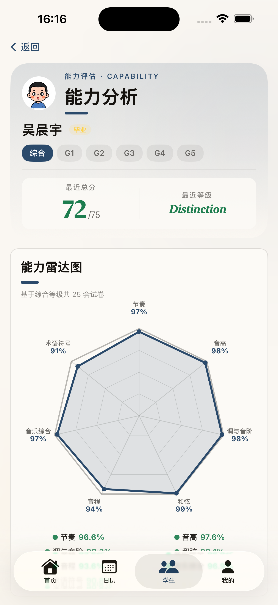
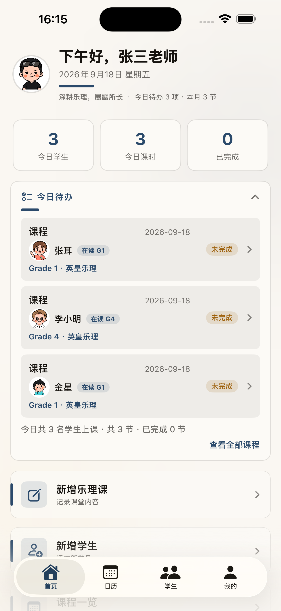
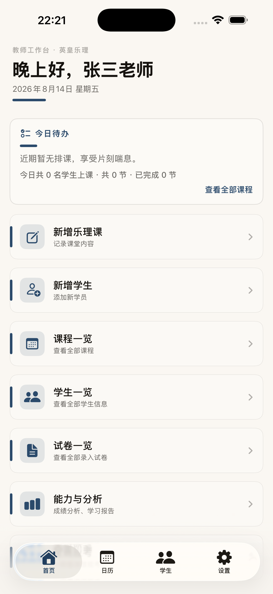
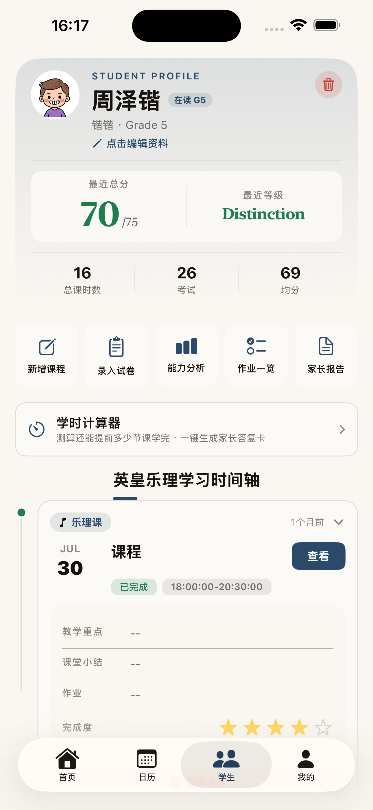
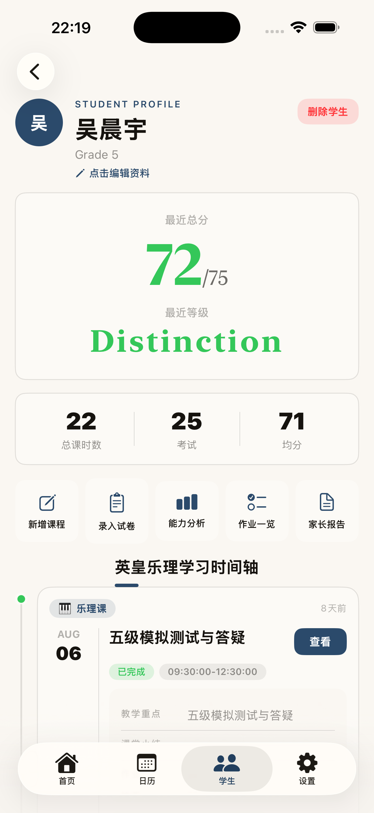
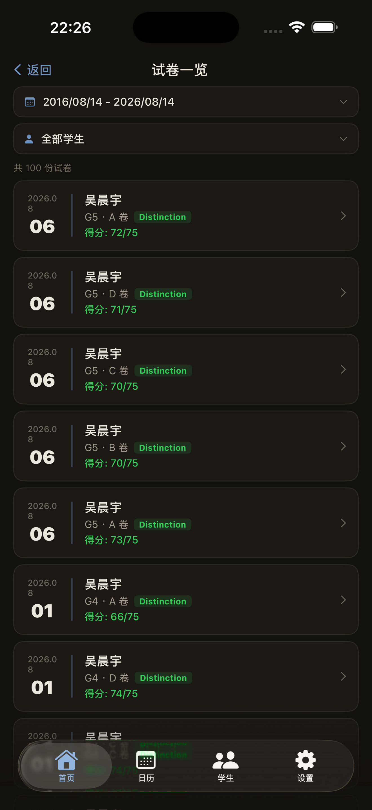

学员视角
面向备考学生与家长
-
备考进度跟踪
按英皇 1–5 级考点逐项追踪学习进度，清楚知道「学到哪、差什么」。
-
错题归档
自动归集真题错题，考前集中回练，把失分点变成提分点。
-
英皇乐理学习辅助
覆盖 G1–G5 知识点讲解与真题练习，随时随地开展系统学习。
深耕乐理，展露所长
Delve into music theory, embrace your APT
英皇乐理考试学生管理系统——专注教学、专项管理、专业分析。 同一套 App，同时服务学员、乐理老师与音乐培训机构。


核心功能
APT 为英皇乐理 1–5 级教学场景设计：学员用来备考，老师与机构用来管理，数据同源、协作无间。
面向备考学生与家长
按英皇 1–5 级考点逐项追踪学习进度，清楚知道「学到哪、差什么」。
自动归集真题错题，考前集中回练，把失分点变成提分点。
覆盖 G1–G5 知识点讲解与真题练习，随时随地开展系统学习。
面向教学与运营管理
集中管理学员档案、报考信息与学习阶段，每个学生一目了然。
记录每节课的时间、内容与回课情况，教学轨迹完整可回溯。
基于作业与试卷数据生成能力分析与家长报告，教学成果看得见。
界面预览
从首页概览到学情分析，每一屏都为英皇乐理教学场景而设计。
左右滑动查看更多




快速上手
从下载到第一次记录学情，只需四步。完整说明见更新日志与 App 内引导。
在 App Store 搜索「APT」或点击本页下载按钮。
录入姓名、年级与当前备考等级，建立专属档案。
课后随手记课时内容，布置作业、跟踪完成情况。
能力分析与家长报告自动生成，成果一键分享。
常见问题
关于设备、数据与隐私，我们梳理了最常被问到的问题。
APT 是 iOS 应用，支持 iPhone 与 iPad。要求 iOS 15 及以上版本，建议升级到最新系统以获得最佳体验。
你的教学数据通过加密连接存储于云端数据库（Supabase），按账号隔离，仅你自己可访问。我们不会出售你的数据，也不会用于广告投放。详见隐私政策。
在的。登录同一账号后，学员、课时、作业等数据会自动同步，换设备无需导出导入。
首次登录与数据同步需要联网；部分本地缓存内容在离线时仍可查看。学情分析等 AI 能力需要联网调用。
基于你录入的作业与试卷作答数据，结合英皇 1–5 级考点体系，由 AI 生成能力分析与家长报告，定位薄弱点、给出备考建议。
可以。APT 面向老师与机构设计，支持为多个学员建立独立档案，首页按日查看待办，互不混淆。